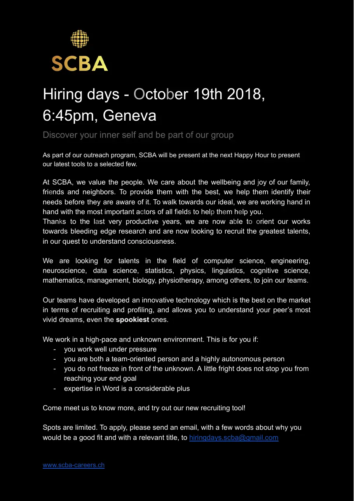

Game design · 2018
A Halloween ARG at Campus Biotech
Three weeks, zero budget, a building full of neuroscientists, psychologists, engineers and everyone in between. A secret game hidden inside the campus Halloween happy hour: a fake corporation, a recruitment test that goes wrong, virtual reality, and live actors.
- Role
- Creator, game designer and director
- Context
- Halloween happy hour, Campus Biotech, Geneva, with the Social Campus Biotech Association and the campus VR platform
- Team
- 20+ volunteers: actors, VR and film, props, the happy hour crew
- Players
- Groups of up to ten, across one evening

The brief
I arrived at Campus Biotech in March 2018 and joined the Social Campus Biotech Association around that summer. I’d been eager for years to be active again in associations and events, and this was my chance to take on a big project within it. Its monthly happy hour, with drinks and food, brought together people from dozens of labs who rarely spoke to each other. For Halloween, a newcomer led a full makeover of the main hall. That gave me a base layer, and I built a game on top of it.
My brief to myself: a short, high-quality proof of concept. Fifteen minutes, spooky and uncomfortable but not horror, no alcohol, for about 50 players who cared enough to sign up. The inspiration came from the many escape rooms and immersive experiences I’d played: the aha moments I’d loved, and the ideas I’d been waiting to try myself.
An alternate reality game (ARG) blurs the line between the game and the real world: clues hide in real places, messages, objects and people, so players are never quite sure where the game begins.
The story
A secretive corporation called SCBA (yes, the same initials as the association) was quietly funding bleeding-edge research, and was holding an undercover recruitment event disguised as the happy hour. Candidates applied through a fake job ad, confirmed by text on the day, and were sent across the party to find their teammates, give a password to the bartender, and follow a masked figure down a dark corridor.
Inside, a cheerfully sinister corporate video set them a first puzzle with a deck of cards. Then, blindfolded, they were led to the “testing facility” to try the company’s new device, which lets you visit someone’s dreams. The dream turned into a nightmare, the headsets glitched, and when players took them off, the attack they had just seen in VR was happening in front of them, to one of their own team. The climax played out in the auditorium, with strobe lights, strange music and monsters, and I’m grateful we have footage of it. An intern hurried them out, monsters pounding on the doors, to find a kill switch, wipe their memories and send them back to the party.

Building it with what we had
The budget was truly zero: everything was lent, borrowed or given in time. The job was to find the right people and give them a reason to join:
- The site’s events coordinator, a gaming fan, trusted us quickly and opened the doors: rooms, corridors and an auditorium.
- A VR engineer from the in-house platform, whose team had built a mini escape room of their own, joined in, along with ten synchronised VR headsets, something still rare at the time.
- Friends from Geneva’s game and live-role-play associations gave feedback on the narrative and lent props.
- Many others added themselves along the way, because it was a win for everyone.
The VR sequence combined a 3D space built with the engineer and 360° footage I recorded, which I then edited and added to. I wasn’t fully fluent in Unity, so the physics broke in places, with cats walking on the ceiling and through walls. I chose not to fix it: it was exactly the eerie touch I wanted. In the 360° footage I experimented with overlapping frames, which created clones, ghostly figures, odd pauses and accelerations.
Safety came first. The VR was seated, there was close to one staff member per player, and I supervised every session. The invitation came with a clear warning, and the brief ruled out gore and cheap jump scares. I wanted discomfort, not trauma.

What I learned
It was my first project at this scale, with technology and a live cast, and the first time I ran the whole chain myself: concept, story, recruiting, building and directing. It worked because everyone found something in it for them: a part in a bigger project, and a chance to work with people whose expertise they’d never crossed paths with.
In hindsight, I’d cut scope. The plan had more ideas than three weeks could hold, so some moments never made it in, and the haunted maze ended up barely haunted. A late start also meant running groups of up to ten instead of four or five. Bigger groups kept everyone moving, but made the experience less personal.
It also showed me a limit. Goodwill can build a great night, but not something lasting. Since then I’ve aimed for projects that are properly funded, which I achieved with the forum theatre and the 2026 museum evening.
Watch the trailer: YouTube